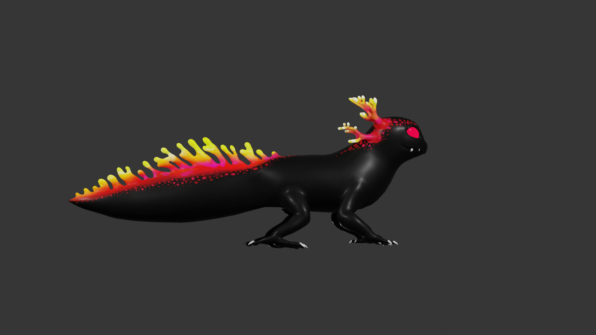
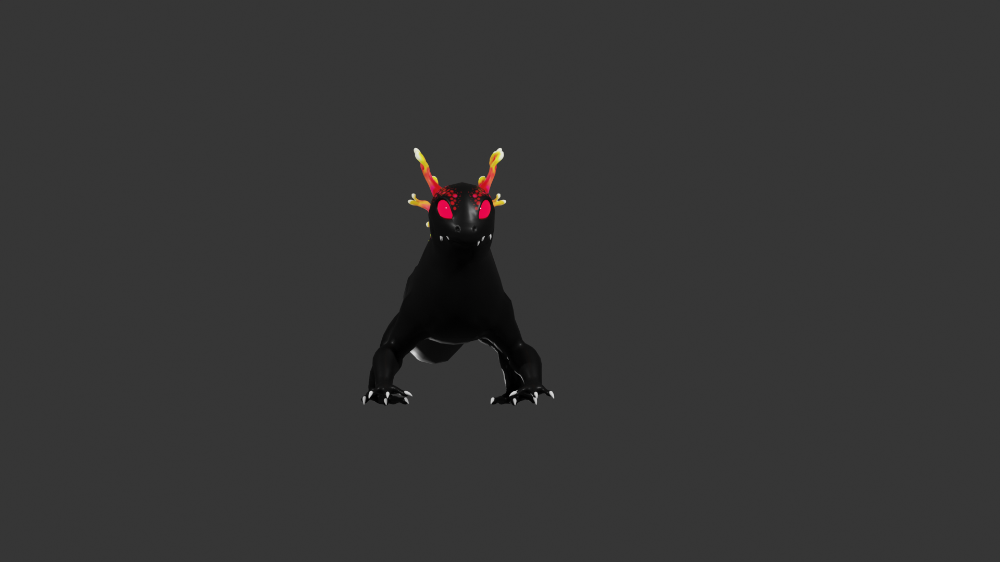
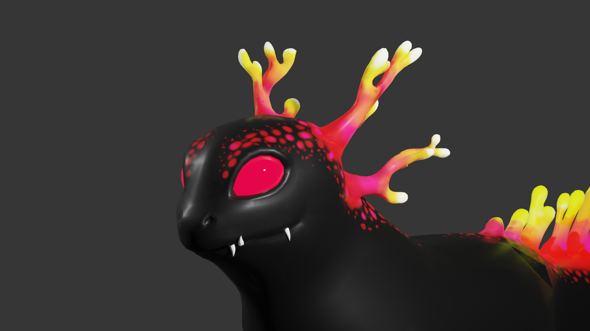
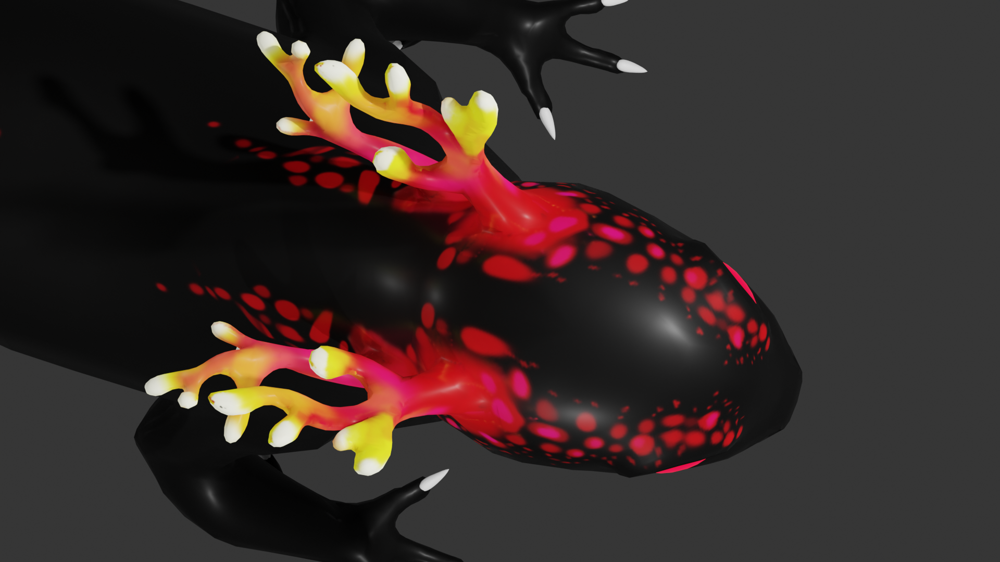
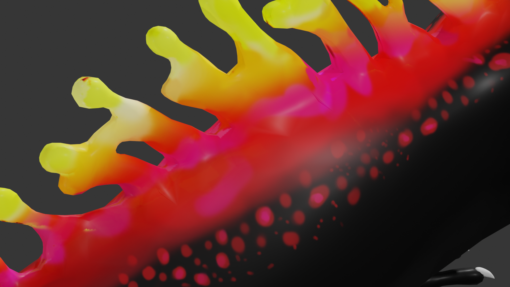

Scroll to ->
Lava Axolotl Model
Turnaround


Close Ups



Topology
Beschreibung
Das Lava Axolotl war als eine Art Sidekick für einen anderen Character (Gus Lighter) gedacht. Auch hier habe ich mit einem Sculpt angefangen und von Hand eine Retopology gemacht. Für alle Arbeitsschritte von Sculpting, Retopology, Baking und Texture Painting habe ich Blender verwendet.